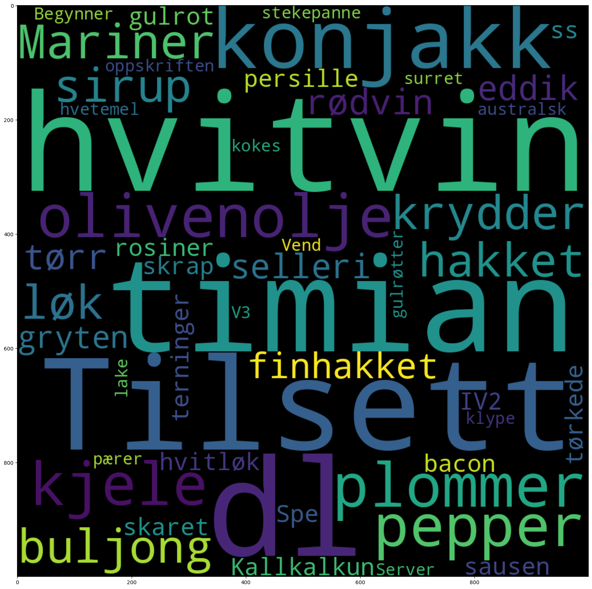
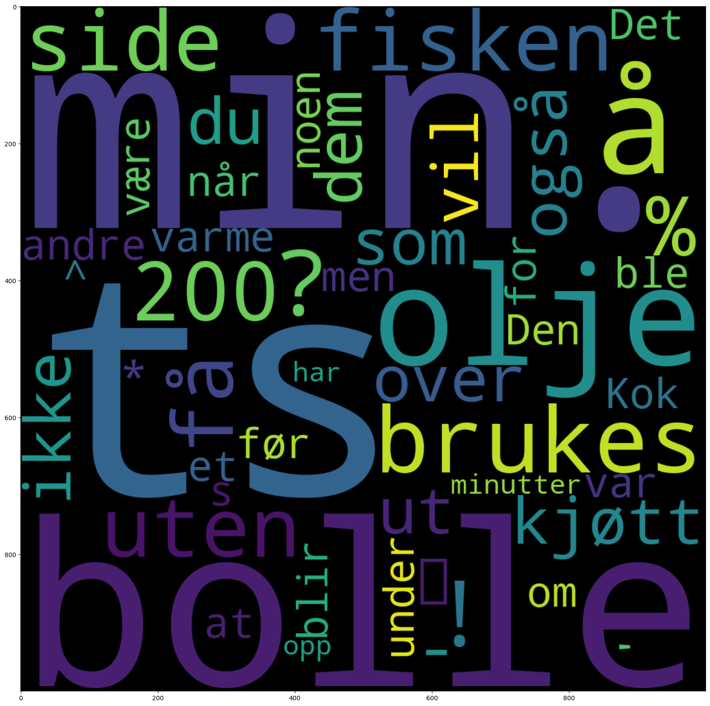

import dhlab as dh
from dhlab.api.dhlab_api import totals
import dhlab.nbtext as nb
---------------------------------------------------------------------------
ModuleNotFoundError Traceback (most recent call last)
Cell In[1], line 3
1 import dhlab as dh
2 from dhlab.api.dhlab_api import totals
----> 3 import dhlab.nbtext as nb
ModuleNotFoundError: No module named 'dhlab.nbtext'
1.5. Kollokasjoner#
Kollokasjoner er assosiasjoner.
I denne notebooken viser vi eksempler på undersøkelser man kan gjøre for å finne ut hvilke ord et ord opptrer sammen med innenfor et korpus.
1.5.1. Konstruer et korpus med Dewey#
Se eksempelfil om Korpusbygging for andre måter å definere korpus.
For å finne relevant dewey-klassifikasjon kan Webdewey være til god hjelp.
# korpus med inntil 50 bøker fra dewey 641 (mat og drikke) utgitt mellom 1960 og 2020
korpus = dh.Corpus(ddk="641*", doctype="digibok", limit=50)
For å se metadata fra korpuset som dataramme brukes metoden corpus. Man kan bruke head() for å begrense antall rader som vises.
korpus.corpus.head(2)
| dhlabid | urn | title | authors | oaiid | sesamid | isbn10 | city | timestamp | year | publisher | langs | subjects | ddc | genres | literaryform | doctype | ocr_creator | ocr_timestamp | |
|---|---|---|---|---|---|---|---|---|---|---|---|---|---|---|---|---|---|---|---|
| 0 | 100571871 | URN:NBN:no-nb_digibok_2010032412009 | Den magnetiske banankokeboka | Steen , Gina | oai:nb.bibsys.no:999619010474702202 | 0fe48491edba7d8a2b9120d0635aacb3 | 8258811541 | [Oslo] | 19950101 | 1995 | Aventura | nob / eng | 641.64 | Faglitteratur | digibok | nb | 20060101 | ||
| 1 | 100029242 | URN:NBN:no-nb_digibok_2010120808024 | Tradisjonsmat fra nord . 2 : 114 matoppskrifte... | oai:nb.bibsys.no:999726415724702202 | 8e240b51ba69e701785a2bc3d55238a3 | 8299418917 | [Tromsø] | 19970101 | 1997 | Victus | nob | kokebøker / mattradisjoner / nord-norge | 641.594843 | Faglitteratur | digibok | nb | 20060101 |
1.5.2. Lager kollokasjoner fra korpuset#
Et skrittvis eksempel.
Bygg kollokasjonen
Finn en referanse
Sammenlign kollokasjon med referanse
1.5.2.1. Bygg kollokasjon#
Kommandoen er dh.Collocation. Legg gjerne inn en sjekk med konkordans.
collword = 'rødvin'
# Vi utfører en konkordans for å sjekke at korpuset virker.
# dh.Concordance(corpus=korpus, query="sei").show()
korpus.conc("sei").show()
| link | concordance | |
|---|---|---|
| 57 | URN:NBN:no-nb_digibok_2009021700049 | Sei selges som filet , |
| 10 | URN:NBN:no-nb_digibok_2009021700049 | torskefikt ( hyse , sei ) kajennepepper |
| 59 | URN:NBN:no-nb_digibok_2009082700011 | ... . 11. Food consumption . Ann . Acad . Sei . ferm . AV . 169 : 1 - 40... |
| 33 | URN:NBN:no-nb_digibok_2017010648152 | ... 1700 Stekt sei , brun saus , poteter , vaniljepudding , jordbærsaus Kl . 2200 2 skiver brød m rekesalat... |
| 8 | URN:NBN:no-nb_digibok_2009021700049 | Sei . Om sommeren er det størst forekomster |
| 38 | URN:NBN:no-nb_digibok_2016012548102 | ... Vask og pill rekene , og fjern den mørke tarmen , sei , mulle K a K a J 500... |
| 13 | URN:NBN:no-nb_digibok_2011102605018 | ... Det var tørrfisk som ble brukt , men også saltet torsk og sei ble ofte brukt , spesielt torskenakker egnet... |
| 46 | URN:NBN:no-nb_digibok_2021062448687 | ... 57 Gammeldags sildesalat 14 Melboller 32 Sjokoladepletter 59 Gammelsaltet sei 13 Melkering 29 Smultringer 44 Glassmestersild 14 Middagspølse 39 Små... |
| 52 | URN:NBN:no-nb_digibok_2023030748125 | ... Jeg fisket alt fra flyndre og kveite til sei og torsk . Interessen for og kunnskapen om råvarene fra sjøen... |
| 16 | URN:NBN:no-nb_digibok_2016012548102 | kolje , torsk , sei , uer |
Så kan vi hente ut selve kollokasjonen, dvs. ord som står innenfor en viss avstand fra målordet.
# Vi legger inn variablen collword som søkeord, med 5 ord før og etter.
# Antall ord før og etter kan endres etter konteksten man vil undersøke.
# Collword er lagt som variabel i cella over, slik at det er lett å gjenbruke notebooken for ulike søkeord
coll = korpus.coll(words=collword, after=5, before=5, samplesize=1000)
# For å vise topp `n` treff bruke .show().head(n)
coll.show().head(5)
| counts | |
|---|---|
| dl | 130 |
| , | 123 |
| og | 103 |
| 1 | 100 |
| . | 95 |
Kollokasjonen ligger i en såkalt dataframe som kan undersøkes med .head() som ovenfor. Man får adgang til datarammen gjennom coll metoden.
coll.coll.sort_values(by="counts", ascending=False).head(10)
| counts | |
|---|---|
| dl | 130 |
| , | 123 |
| og | 103 |
| 1 | 100 |
| . | 95 |
| 2 | 83 |
| i | 60 |
| ss | 47 |
| med | 45 |
| / | 40 |
1.5.2.2. Finn referanse#
Det er flere måter å sammenligne på. En er å bruke bokhylla selv om som referanse. For å hente ut ord fra bokhylla brukes kommandoen totals(<antall ord>). Korpuset selv kan også benyttes, for eksempel med kommandoen aggregate_urns(<korpusdefinisjon>).
1.5.2.2.1. Bokhylla aggregert#
totals inneholder råfrekvenser fra Nasjonalbibliotekets katalog.
tot = totals(50000)
tot.head()
| freq | |
|---|---|
| . | 7655423257 |
| , | 5052171514 |
| i | 2531262027 |
| og | 2520268056 |
| - | 1314451583 |
1.5.2.2.2. Aggregert korpus#
# dh.Counts teller tokens i hver tekst i korpus
dokumenter_aggregert = korpus.count(words=None)
# Summerer slik at vi får totalt tokens for korpus
korpus_agg = dokumenter_aggregert.counts.sum(axis=1)
Gjør den om til dataramme, sorterer og ser på resultatet
Dataramme med kommando
frame()Sortering med
frame_sort()definert øverst i den her notebooken.
korpus_agg = nb.frame_sort(nb.frame(korpus_agg))
korpus_agg.head(10)
| 0 | |
|---|---|
| . | 110996 |
| , | 81221 |
| og | 69996 |
| i | 55908 |
| med | 28137 |
| til | 23496 |
| en | 22829 |
| er | 21912 |
| på | 20538 |
| av | 20474 |
1.5.2.3. Sammenlign#
Vi har nå tre frekvenslister som kan sammenlignes med hverandre. For å lette sammenlign normaliseres dem. Kommandoen for normalisering er normalize_corpus_dataframe(<frekvensliste>)
coll.coll.sort_values(by="counts", ascending=False)
| counts | |
|---|---|
| dl | 130 |
| , | 123 |
| og | 103 |
| 1 | 100 |
| . | 95 |
| ... | ... |
| jeg | 1 |
| japansk | 1 |
| ja | 1 |
| Rein | 1 |
| Plomme | 1 |
748 rows × 1 columns
coll_df = coll.coll.copy()
coll_df.sort_values(by="counts", ascending=False)
| counts | |
|---|---|
| dl | 130 |
| , | 123 |
| og | 103 |
| 1 | 100 |
| . | 95 |
| ... | ... |
| jeg | 1 |
| japansk | 1 |
| ja | 1 |
| Rein | 1 |
| Plomme | 1 |
748 rows × 1 columns
nb.normalize_corpus_dataframe(korpus_agg)
nb.normalize_corpus_dataframe(tot)
nb.normalize_corpus_dataframe(coll_df)
True
Inspiser dataene etter normalisering
1.5.2.3.1. Aggregert korpus#
Fyll inn verdier for .head() for å se mer.
korpus_agg.head()
| 0 | |
|---|---|
| . | 0.0561 |
| , | 0.041051 |
| og | 0.035378 |
| i | 0.028257 |
| med | 0.014221 |
1.5.2.3.2. Bokhylla total#
tot.head()
| freq | |
|---|---|
| . | 0.070908 |
| , | 0.046796 |
| i | 0.023446 |
| og | 0.023344 |
| - | 0.012175 |
1.5.2.3.3. Kollokasjonen#
coll.coll.head()
| counts | |
|---|---|
| ! | 1 |
| % | 1 |
| ' | 2 |
| ( | 16 |
| ) | 18 |
Kollokasjonen coll har gjennomgående høyere verdier, noe som sannsynligvis skyldes at det er færre ord.
1.5.2.3.4. Utfør sammenligning#
For sammenligning måles forskjellen på coll med referansen. Forskjellen måles ved å dividere hvert ords frekvens ikollokasjonen på frekvensen ordet har i referansen.
Divisjonen pr.ord gjøres av Python - resultat sorteres og legges i variabelen coll_assoc
coll_assoc = (coll_df.counts**1.0/tot.freq).sort_values(ascending=False).to_frame()
coll_assoc.head(20)
| 0 | |
|---|---|
| hvitvin | 2350.803006 |
| dl | 2293.312623 |
| timian | 1852.168867 |
| Tilsett | 1501.565860 |
| konjakk | 1350.283560 |
| plommer | 1039.702480 |
| olivenolje | 1008.837956 |
| kjele | 936.131202 |
| pepper | 804.357939 |
| Mariner | 796.114548 |
| krydder | 795.305956 |
| buljong | 788.195891 |
| hakket | 779.007518 |
| sirup | 727.853524 |
| løk | 722.895085 |
| finhakket | 705.380701 |
| rødvin | 675.943326 |
| tørr | 645.746589 |
| selleri | 634.523589 |
| eddik | 631.984947 |
1.5.2.3.5. 2.3.5. Sammenlign med korpus#
Her kan det være nyttig å bruke en eksponent for å dempe effekten av lavfrekvente ord.
korpus_agg
| 0 | |
|---|---|
| . | 0.0561 |
| , | 0.041051 |
| og | 0.035378 |
| i | 0.028257 |
| med | 0.014221 |
| ... | ... |
| nødhjelpsmat | 0.000001 |
| steine- | 0.000001 |
| EYLL | 0.000001 |
| brødsaus | 0.000001 |
| pepperrotfamilien | 0.000001 |
111164 rows × 1 columns
coll_assoc_korp = (coll_df.counts**1.2/korpus_agg.iloc[:, 0]).sort_values().to_frame()
coll_assoc_korp.head(20)
| 0 | |
|---|---|
| har | 0.026891 |
| opp | 0.037225 |
| minutter | 0.038755 |
| men | 0.041737 |
| for | 0.041761 |
| om | 0.043783 |
| var | 0.045263 |
| at | 0.054856 |
| blir | 0.058007 |
| før | 0.071289 |
| ble | 0.072577 |
| være | 0.07625 |
| s | 0.080353 |
| varme | 0.080776 |
| ^ | 0.083784 |
| ' | 0.084514 |
| under | 0.086093 |
| når | 0.087431 |
| Den | 0.089708 |
| noen | 0.091113 |
1.5.3. Visualiser med en ordsky#
Visualiseringen trives best med tall mellom 0 og 1, så assosiasjonene divideres på summen av dem for å få til det. Ordskyene lages med kommonandoen cloud(<data>). Pass på å ikke ta med alt for mange; det kan gi feilsituasjoner.
# Her viser vi de 50 viktigste ordene som er assosiert med rødvin i korpuset vårt, målt mot alle bøker i nb.no
nb.cloud(coll_assoc.head(50)/coll_assoc.sum())

# Her viser vi de 50 viktigste ordene som er assosiert med rødvin, målt mot hele "Drikkevare"-korpuset
nb.cloud(coll_assoc_korp.head(50)/coll_assoc_korp.sum())

1.5.4. Gjenbruk med andre ord og korpus#
Bytt ut parametrene i cellen der
korpusblir definert.Bytt ut ordet som er angitt som
collword.Gå til
Celli menyen og velgRun All.
Det er også mulig å først velge File og Make a Copy, slik at man oppretter en ny notebook før man starter.
Tilbake til DHLAB ved Nasjonalbiblioteket